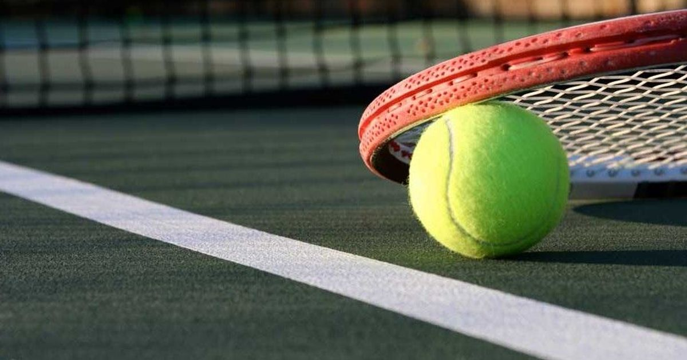

- 


Sports are defined as physical or mental exertion by individuals and are committed to maintaining physical or mental fitness. There are many types of exercise that can be practiced as a healthy habit, such as walking, horseriding, swimming or athletics and these sports have many benefits on the human body and mind. Sport makes the body ideal, consistent, and healthy, as it strengthens it and fights obesity.
Swimming
Swimming is a good all-round activity because it: keeps your heart rate up but takes some of the impact stress off your body. It builds endurance, muscle strength and cardiovascular fitness. It helps maintain a healthy weight, healthy heart and lungs. If you were to ask me what my favourite sport is, my answer would be swimming. I started learning how to swim when I was five years old and I have been swimming ever since. There are many reasons for my love to this sport. The first reason that I love swimming is that it can be extremely relaxing. I love the feeling of floating on the water and feeling almost weightless. I find that whenever I leave the pool I feel totally relaxed and at ease. On the other hand, it can also be a fast-paced competitive sport which raises your heartbeat. It’s amazing pushing yourself to the challenge of beating someone else to the finish line and it’s great fun racing across the pool as fast as you can! Trying little tricks like underwater handstands and flips also puts a big smile on my face.
Tennis
Tennis is one of the most popular individual sports in the world. I found tennis a wonderful way to make new friends and socialise and as I improved I began to enjoy the sport even more. I played regularly two to three times a week and I then started playing in tournaments and on teams from my local club. For me, tennis combines a wonderful social aspect with healthy competition and of course, this brings plenty of health benefits in itself. Not only do you build up your cardio on the court but your reflexes, arms and core get a good workout too.
Travelling means going from one place to another for different purposes. Many travellers explore to see the unseen and know the unknown. The travellers also travel to the most beautiful places of the world which uphold the existence of nature. At the same time, people do not travel fro the same purposes. Someone travels to gain knowledge and experience, someone travels for pleasure, someone travels for business purposes etc. There are different types of travelling like- travelling by air, bus, boat, train, bus etc. Every travel journey has much educative value. It is a part of education. Our education and book knowledge remain imperfect without travelling. For this reason, we can learn many things by travelling.
My first visit to Paris was a remarkable experience, which I will never forget. It was a great feeling to arrive in Paris and see the city of light – a modern city with a very deep sense of history. I will never forget the moment when I first drove on the highway, passed the canals and saw the monuments. It was like a huge open-air museum. It was love at first sight. When I were in the centre of Paris, I saw Hotel de Ville. It was a magnificent large building that looked like a palace. It was remarkable! I stayed in Paris for ten days and had a fantastic time. I loved everything about this romantic city and vowed to never hesitate to come back to experience it again and again. I also promised myself that I would learn the language!
It's always a good time to travel to Spain. That's because this country in southern Europe has all the ingredients to make your visit an unforgettable experience. Cities which bear the marks of a rich mixture of cultures, monuments and natural spaces awarded the World Heritage designation by the UNESCO, some of the world's most important museums, beaches to suit everybody, a pleasant climate all year round, the healthy Mediterranean diet, typically Spanish traditions such as flamenco and bullfighting. I visited Barcelona, and well what can I say, I fell in love with the city! Wonderful city, full of beautiful architecture, scenery, beaches and food.